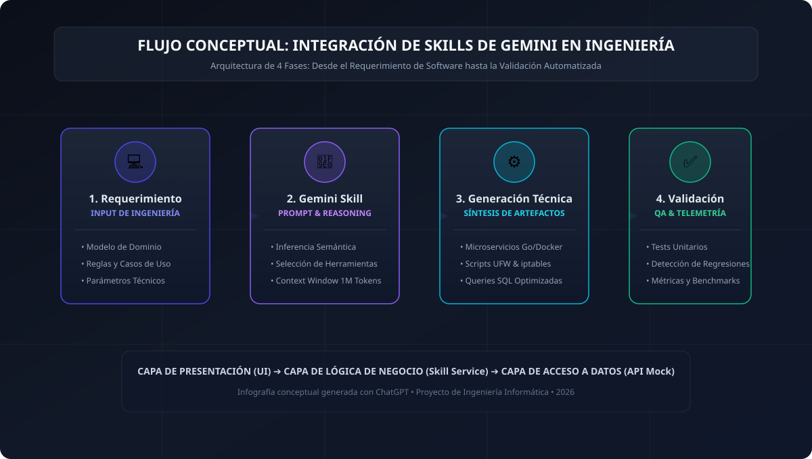
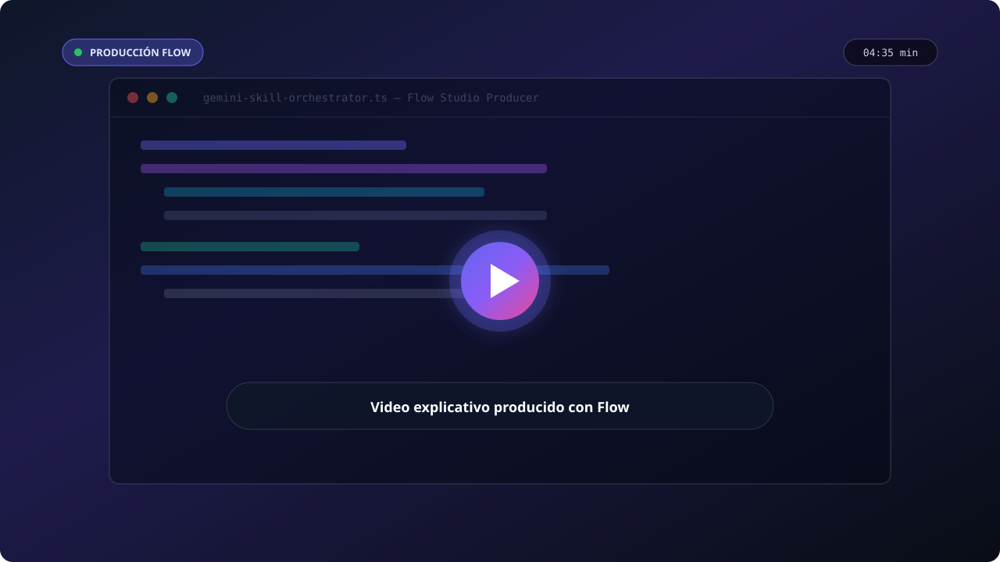

Potenciando el ciclo de vida del software mediante agentes inteligentes especializados: desde la generación de microservicios resilientes y hardening de redes, hasta la optimización de consultas SQL complejas con validación arquitectónica estricta.
Diagrama conceptual de alto nivel que ilustra cómo los requerimientos de ingeniería son procesados por la Skill semántica de Gemini, desacoplada mediante la arquitectura por capas.

Demostración audiovisual guiada sobre la arquitectura técnica, la integración de la API de Gemini y el caso de uso aplicado a la ingeniería informática.

Experimenta cómo la Skill asiste en tareas de desarrollo crítico como la creación de microservicios, hardening de red Linux o afinamiento de consultas de bases de datos. Al pulsar el botón, observa cómo la solicitud atraviesa de forma limpia cada una de las 3 capas.
Estructura estricta para garantizar bajo acoplamiento, alta cohesión y testeabilidad sin depender de frameworks pesados, aplicando buenas prácticas de Ingeniería de Software.
Responsable exclusivamente de la interfaz de usuario, accesibilidad, maquetación semántica y captura de eventos.
Orquesta las operaciones, aplica reglas de validación de ingeniería, calcula métricas de costos y normaliza modelos.
Abstrae la comunicación con la API externa de Gemini. Simula respuestas asíncronas con latencia realista y códigos HTTP.